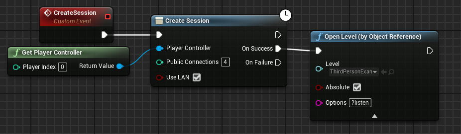
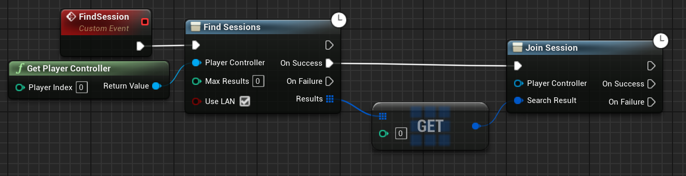
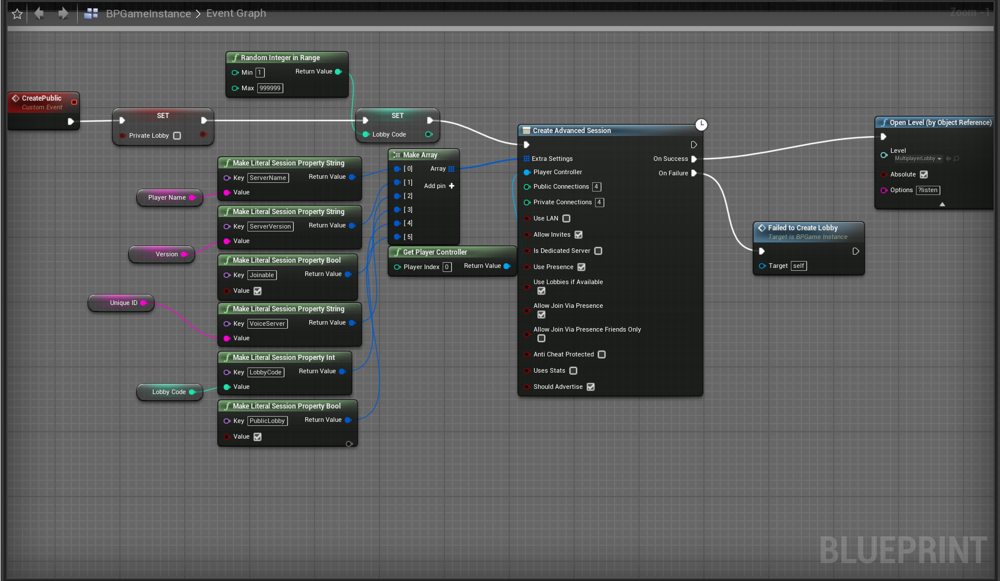
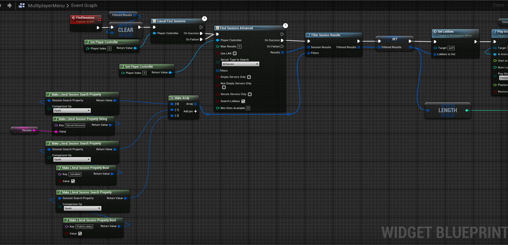

Creating Multiplayer Sessions
Creating a session is what will open up our game for other people to be able to join.
Unreal Engine has a built in system for us to be able to create and find sessions, using their respective nodes "Create Session" and "Find Sessions", as presented here:
Create Session:

The public connections allows us to set a max number of players for our game, and use LAN determines if we want to use LAN for our session or not.
**IMPORTANT NOTE**
You will need to open a new level and use the "?listen" in the options for this to work, as "?listen" tells the engine to launch the level as a listen server, with "Create Session" just creating the session for us. However our session will not do anything if we do not have a listen server!
Find Sessions:

This is used to find any active sessions, and we can leave max results to 0 if we don't want to set a limit to our results.
You can then do what you want with the array of sessions, you can use a for-each loop to store each session found and add it to a UI for the user to pick from, but for my example I made this code just join the first server it finds.
**IMPORTANT NOTE**
You will want to create a session on your Game Instance, as to prevent it from getting destroyed when loading into a new level.
You can freely use Find Sessions anywhere, so adding that to your UI code would work.
You will obviously want to set up some sort of UI for this to work.
It is also worth noting that with Unreal's built in session system, it will only work on your local network and people from other networks won't be able to find your sessions.
Broading your Session Across Networks
If you want to be able to broadcast your sessions elsewhere, you can look into implementing external plugins such as Steam Advanced Sessions or Epic Online Services.
Plugins such as Steam Advanced Sessions will not only broadcast your sessions to the Steam network, but will give you many more options for creating and finding sessions such as extra settings, filtering, etc.
Here is an example of another project I am working on that uses Steam Advanced Sessions for multiplayer:
Creating Steam Advanced Session:

Finding Steam Advanced Session:

These might look quite a bit more advanced than regular sessions, and they do take a little bit of learning and playing around with to get working right, however they are good solutions for if you really want to broadcast your game across different networks, or if you are uploading your game to Steam.
That is all I have for my Unreal Engine multiplayer tutorial, if you want to learn more about replicating or implementing Steam Advanced Sessions to your game, head over to my products page where you can purchase a full-course that will go much more in-depth and we can even help you with your own projects!